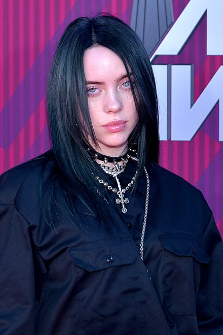

22 октября 2019 года стало известно, что Айлиш работает над новой музыкой. В ноябре 2019 года певица объявила о выпуске двух новых песен и клипа на песню «Xanny». Позже она раскрыла название песни и дату релиза «Everything I Wanted» во время прямой трансляции в Instagram 10 ноября 2019 года. Она представила обложку для песни на следующий день.
Песня написана в тональности Фа-диез минор и имеет эфирный фортепианный фон со значительным использованием реверберации. В тексте песни рассказывается об отношениях Айлиш с её братом Финниасом, а также о кошмаре, который был у певицы. Этот кошмар был связан с тем, что Билли «сошла с «Золотых ворот» и обнаружила, что люди не любят её так сильно, как они показывают». Певица также сказала: «Мы начали писать её, потому что мне буквально приснилось, что я покончила с собой, и никому не было дела, и все мои лучшие друзья и люди, с которыми я работала, в основном выходили на публику и говорили: «о, мы никогда не любили её». Во сне фанатам было всё равно. Интернет обосрался на меня за то, что я покончил с собой, все это, и это действительно испортило меня».
1 страница4 страница